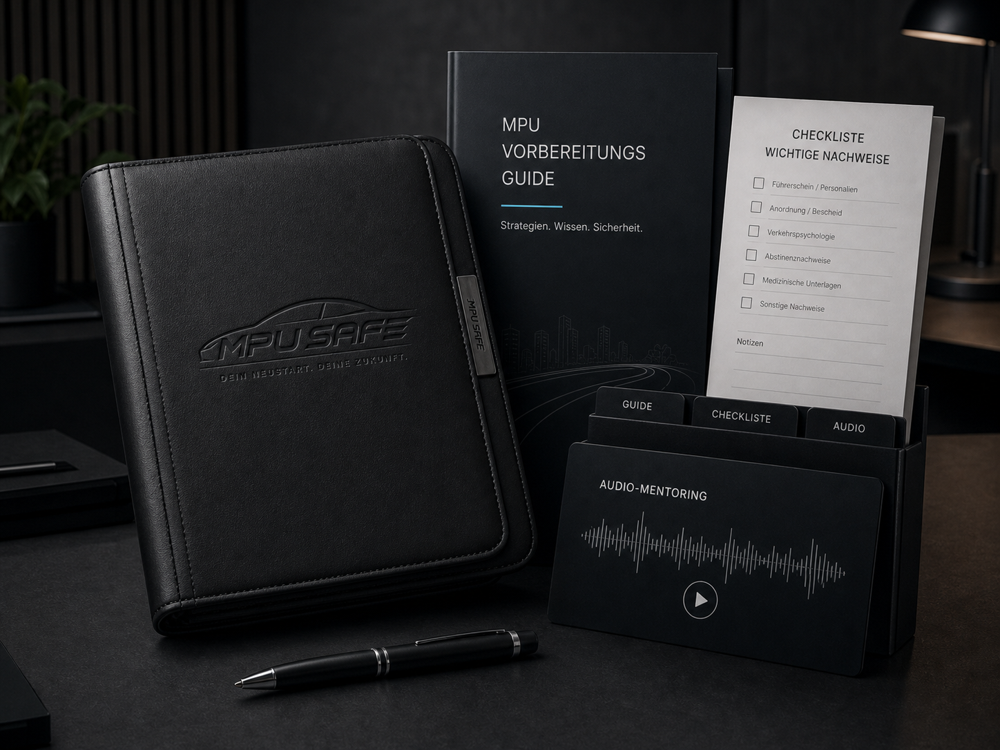
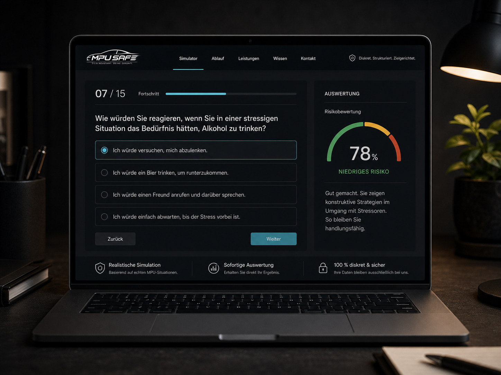

1.250+
erfolgreich vorbereitete Klient:innen
MPU Vorbereitung mit Plan und Perspektive
Wir bereiten Sie strukturiert, diskret und zielgerichtet auf Ihre MPU vor - mit Fallanalyse, Nachweisplanung und professionellem Gesprächstraining.
erfolgreich vorbereitete Klient:innen
Bestehensquote unserer Klient:innen
Jahre Erfahrung in MPU-Beratung
Diskretion & Datenschutz garantiert
Digitale Vorbereitung
3 Einstiege. Ein Fahrplan.Ob erster Überblick, realistische Simulation oder komplette Begleitung: Die Pakete bauen bewusst aufeinander auf. Digitale Einstiege können beim 1:1 Coaching angerechnet werden.
29,99 €

69,00 €

ab 995 €
Passendes Angebot für Ihre Situation auswählen.
Materialien nutzen oder Simulation durchlaufen.
Risiken erkennen, bevor es in die Begutachtung geht.
Digitale Einstiege werden beim Coaching berücksichtigt.
Keine Garantieversprechen. Klare Vorbereitung, ehrliche Einschätzung.
Unser bewährter Prozess
Gemeinsam analysieren wir Ihren Fall, klären die Ursachen und definieren die Ziele.
Wir planen alle erforderlichen Nachweise individuell, realistisch und fristgerecht.
Im Gesprächstraining üben wir realistische Situationen - sicher und souverän.
Wir begleiten Sie bis zum MPU-Termin und stehen an Ihrer Seite.
Vertrauen durch Kompetenz
Unsere Methoden basieren auf aktuellen wissenschaftlichen Standards.
Psychologen, Verkehrsexperten und MPU-Berater mit langjähriger Praxis.
Von der ersten Analyse bis zur erfolgreichen MPU - wir bleiben an Ihrer Seite.
Leistungen
MPU Safe verbindet persönliche Beratung, digitale Lernpakete und konkrete Nachweisplanung. Der Ablauf bleibt klar, auch wenn der Fall komplex ist.
Kurze, vertrauliche Einordnung von Anlass, Fristen und den wichtigsten Unterlagen.
Alkohol, Drogen, Punkte, Straftaten oder negatives Gutachten werden getrennt bewertet.
Abstinenz, Belege, Kurslogik und Zeitfenster werden realistisch und früh geplant.
Antworten werden nicht auswendig gelernt, sondern glaubwürdig und belastbar geübt.
Wissen & Fallcheck
Eine gute MPU-Vorbereitung ist kein Skript. Sie zeigt, ob die Ursache verstanden, die Veränderung nachvollziehbar und der Alltag stabiler geworden ist.
Wir prüfen Trinkhistorie, Abstinenzfrage, Risikosituationen und die Sprache für kritische Gutachterfragen.
Über MPU Safe
Unsere Vorbereitung bleibt bewusst sachlich: keine leeren Versprechen, keine Panik, keine auswendig gelernten Standardantworten. Entscheidend ist, dass Ihr Fall sauber verstanden und glaubwürdig erklärt werden kann.
Wir sortieren, was wirklich relevant ist und was nur Druck erzeugt.
Das Training klingt nach Ihnen - nicht nach einer Vorlage.
Seriöse Beratung bleibt ehrlich, auch wenn der Fall schwierig ist.
Nachweise & Vorbereitung
Je nach Anlass gehören andere Themen in die Vorbereitung. Wir strukturieren die Inhalte so, dass sie im MPU-Gespräch nicht improvisiert wirken.
Trinkmengen, Motive, Kontrollverlust, Abstinenzfrage, Rückfallrisiko und Stabilisierung.
Konsumverlauf, Drogenarten, Ersatzrisiken, soziale Umgebung und belastbare Schutzfaktoren.
Verkehrsverhalten, Stressmuster, Risikobereitschaft und konkrete Routinen im Alltag.
Schwachstellen, Widersprüche, fehlende Belege und die Strategie für den zweiten Anlauf.
Standorte
48432 Rheine, Kanalstraße 93 - Neunkirchen
Häufige Fragen
Wir ordnen Anlass, Fristen, vorhandene Unterlagen und mögliche Nachweise ein. Danach ist klarer, welche Vorbereitung sinnvoll ist.
Nein. Eine seriöse Vorbereitung gibt keine Garantie. Sie kann Risiken sichtbar machen und das Gespräch realistisch trainieren.
Das hängt vom Anlass, Konsumverlauf, Zeitraum und den Anforderungen des Einzelfalls ab. Deshalb gehört diese Frage früh in die Analyse.
Ein Start ist oft kurzfristig möglich. Ob das für Ihren MPU-Termin reicht, prüfen wir ehrlich im Erstgespräch.
Kontakt
Vertraulich, kostenlos und ohne Druck. Dieses Demo-Formular ist noch nicht an ein CRM angebunden.